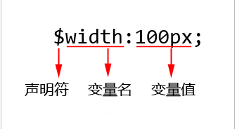

Sass是什么
Sass就是众多CSS预处理器中的其中一种。是功能最为强大、最成熟、并且是最为流行的CSS预处理器。
Sass是一种动态样式语言，比CSS多出好些功能（如变量、嵌套、运算、混入、继承、颜色处理、函数等），更容易阅读。
- 什么是CSS预处理器？
CSS预处理器的出现，使得我们可以像操作JavaScript那样以“编程”的方式来书写CSS。在CSS预处理器中，我们可以使用变量、循环、函数等方式来简化操作，提高开发效率。
- CSS预处理器语言
- Sass；
- Less；
- Stylus；
Sass和Less的区别
- Sass由于是使用Ruby编写的，所以编译的时候是在服务器端处理；而Less由于是使用JavaScript编写的，所以编译的时候是在浏览器端处理；
- Sass拥有更为强大的功能，如循环、函数、混合宏等，而less却没有；
- Sass拥有成熟稳定的框架来辅助开发，特别是Compass，而less却没有；
- Sass在国内外讨论热度最大，并且有一个稳定强大的团队在维护；
- 相当多的公司更为倾向于使用Sass，而不是less；
Sass语法格式
- Sass格式
Sass格式，是Sass的“旧版本语法”。这种语法格式，不使用大括号“{}”和分号“;”，而是使用严格的缩进式语法规则来书写，也就是类似Ruby语言的写法。
- Scss格式
Scss格式，是Sass的“新版本语法”。这种语法格式，使用大括号“{}”和分号“;”，并不使用严格的缩进式语法规则来书写，也就是类似CSS书写的格式。
Sass的使用
我们都知道Sass文件后缀名都是“.scss”或者“.sass”，我们不能像引入CSS文件那样直接使用link标签引入Sass文件的。也就是说，我们直接引入Sass代码是不会生效的。因此，我们必须将Sass代码转换为CSS代码，才能被页面所用，这个过程被称为“编译”。
在本地编辑器中编写Sass之后，也需要编译成CSS才能使用。
Sass变量
- 简介
在JavaScript中，声明变量都是用var。但是在Sass中，我们声明变量使用的是“$”（美元符号）开头。

Sass的变量包括3部分：声明符、变量名、值。定义一个Sass变量必须用“$”开头，不然编译的时候是无法识别的。
- 一般值
指的是我们常见的变量值，这个值可以是数字、字符串等。
- 默认值
给变量初始化一个默认值，这个值在后面可以根据开发的需要，使用一个“同名变量”的值覆盖掉。定义变量的默认值很简单，我们只需要在“变量值”后面加上“!default”就可以了。
- 变量的作用域
- 全局变量
一般指的是在“选择器、混合宏、继承等”外部定义的变量。全局变量从定义开始，一直到整个程序结束都起作用。
- 局部变量
一般指的是在“选择器、混合宏、继承等”内部定义的变量。局部变量只能在这些的内部起作用，在这些的外部是不起作用的。（局部变量的定义可以覆盖掉全局变量）
数据类型
- 数字值
在Sass中，数字（Number）是最基本的数据类型，可以是正数、0或负数。数字在Sass中使用非常广泛，大多数都是结合CSS单位来实现的，例如10px、10em或者10%。虽然它们带有单位，但是技术上依然算是数字。
- 字符串
在JavaScript中，使用单引号（''）或双引号（""）包含的都是字符串，就算它们包含的是一个空格，那也是字符串。
- 有引号的字符串
- 无引号的字符串
无引号字符串，我们在CSS中是经常遇到的，例如“font-weight:bold”中的bold、“font-family:sans-serif;”中的sans-serif等。Sass引入无引号字符串的目的也是为了与CSS语法一致。
- 布尔值
数字值和字符串这2种数据类型的取值有无数种，但是Sass中的布尔值只有2种取值：true和false。
在Sass中，布尔值一般用于“@if…@esle…语句”条件判断，只有条件表达式结果是false或null才会返回false，其他一切将返回true。（Sass中的“@if...@else...”跟JavaScript中的“if...else...”是一样的）

- 颜色值
在Sass，有一种特殊的数据类型，那就是“颜色值”。Sass中的颜色值共有4种：
- 关键字颜色值，如red；
- 十六进制颜色值，如#FFFF00；
- RGB颜色值，如rgb(255,255,0)；
- HSL颜色值，如；hsl(360,50%,50%)；
这几种颜色值都是可以互相转换的，在Sass的颜色运算中，我们都是统一转换为十六进制颜色值然后再计算。
- 列表值
这种数据类型跟JavaScript中的数组相似，我们可以把它比作“Sass中的数组”。
- 英文逗号隔开的分隔值
- 空格隔开的分隔值

- Map值
Map值跟JSON值是非常相似的，数据都是以“键/值”的方式成对出现。
Map值的语法结构都是以“(”开始，到“)”结束的。其中“键名”和“值”之间用英文冒号构成对，两个“键名:值”之间用英文逗号分隔。此外还要注意一下，最后一对“键/值”后面是不需要逗号的。

- 空值Null
Sass嵌套
- 选择器嵌套
选择器嵌套，是Sass中最常见的嵌套方式，这个类似于HTML元素的嵌套。
选择器嵌套这种方式虽然操作起来很方便，但是却有一个很大的弊端：嵌套的层级越深，编译出来的CSS代码的选择器层级也越深。这种嵌套方式会导致CSS样式冗余，并且难以维护。
在CSS中，选择器的层级越多，浏览器解析时匹配的次数就越多，因而速度就越慢。因此在定义选择器的时候，我们要尽量让选择器的层级少一些，最好不要超过3层。所以在实际开发中，我们应该尽量注意一下Sass选择器嵌套中的层级问题，尽量少用选择器嵌套的方式来书写Sass。

- 属性嵌套
对于拥有相同前缀的属性，我们可以使用属性嵌套的方式来简化操作。

对于属性嵌套，我们要特别注意一点：在需要嵌套的属性前缀后面一定要加英文冒号“:”，不然编译出来的就不是我们想要的效果。
- 伪类嵌套
类嵌套（或伪元素嵌套）跟属性嵌套很像，只不过它是需要借助“&”符号一起配合使用。伪类嵌套都是结合“&”符号来实现的，编译的时候“&”会替换成相应的选择器。伪元素嵌套同样也是结合“&”符号来实现的，编译的时候“&”会替换成相应的选择器。


Sass插值
在Sass中，我们可以通过使用插值的方式来实现在“选择器名”、“属性名”以及“属性值”中插入一个“变量的值”，从而来“构造”一个新的选择器名、新的属性名以及新的属性值。插值这种方式，在Sass代码的几乎任何一个地方都可以插入一个值，包括选择器名、属性名、属性值等。

变量，我们一般都是用于属性值的，是不能直接用于选择器名中的，不然Sass会无法编译成CSS。所以必须按照以上语法写。

如果属性值是一个简单数字或者字符串，我们可以使用变量的方式来实现。但如果属性值是一个复杂的数据类型，我们就必须使用插值的方式来实现。
总而言之，如果你想要在Sass中构造一个新的选择器名、新的属性名以及新的属性值，首先考虑的应该是使用“插值#{}”来实现。
Sass注释
- //注释内容
在Sass中，这种注释方式在编译后不会保留下来。
- /*注释内容*/
在Sass中，这种注释方式在编译之后会保留下来。因为这种注释方式跟CSS注释方式是相同的，所以编译后会保留下来。
- /*!注释内容*/
在注释内容前面加上一个“!”，这种压缩工具就不会删除这条注释信息了。不过这种注释方式用得很少，一般在CSS文件顶部为了声明版权信息才会使用。
Sass的数字运算
- 加法
做加法运算时，数值可以带单位，但是需要运算单位相同。如果不相同就会报错，编译不通过。
- 减法
同加法。但如果是做减法运算是“变量”而不是“数值”的时候，我们要注意减号“-”前后一定要有空格。不然Sass无法正确地识别哪个“-”是变量的一部分，哪个“-”是减号。不过对于Sass中的加法，则不需要考虑这一点。
- 乘法
做乘法运算时，只能有一个数值带单位，另外一个数值只能是不带单位的数字。如果两个都是带单位的数字，则Sass会报错而编译不通过。
- 除法
在Sass中，如果我们想要做除法运算，我们需要在外面添加一个“小括号()”。如果我们将小括号去掉，则Sass编译的时候会报错。但是在Sass中，如果做除法运算中是“变量”而不是“数值”时，“/”会被自动识别为除法，不需要在外面添加小括号。在实际开发中，不管是加法、减法，还是乘法、除法运算，我们都建议在外面加上小括号。这种书写方式，能够使得代码一目了然，也方便维护。


字符运算
在Sass中，我们可以使用“+”（加号）来实现字符串的拼接。对于字符串的连接，我们分为3种情况来考虑：
- 如果左右两个字符串都是有引号的，结果是一个有引号的字符串；
- 如果左边字符串是有引号的，右边字符串是没有引号的，结果是一个有引号的字符串；
- 如果左边字符串是没有引号的，右边字符串是有引号的，结果是一个没有引号的字符串；
一句话概括：结果字符串是否有引号，取决于左边字符串是否有引号。
Sass之所以会引入2种字符串，也是为了与CSS的语法一致。
颜色运算
在Sass中，我们也是可以对颜色值进行运算的。颜色运算支持加、减、乘、除，并且是分段进行计算的。也就是说，红、绿、蓝这3个部分的颜色是单独进行计算的。
如果颜色值不是十六进制颜色值（如#010203），而是RGB或者HSL的话，我们都是将RGB或HSL先转换为十六进制颜色值，然后再进行加、减、乘、除运算的。
Sass代码重用
- 继承“@extend”;
使用“@extend”来继承一个样式块，从而实现代码的重用。

- 占位符“%placeholder”；
占位符%placeholder”并非用来替换“继承@extend”的，而是用来配合“继承@extend”来使用的。此外在实际开发中，继承中的基类是否就一定要去掉呢？这个倒不一定。如果你的HTML结构需要用到基类，则不需要使用占位符的方式来去掉；如果你的HTML不需要用到基类，则建议使用占位符配合继承来去掉。
我们可以知道，继承@extend有2种输出方式：
- 需要保留基类的：只使用@extend来实现；
- 不需要保留基类的：使用@extend配合%placeholder来实现；
- 混合宏“@mixin”；
- 定义和调用
在Sass中，我们可以使用“混合宏（mixin）”来处理经常被多个地方使用的相同的CSS代码块。混合宏，跟JavaScript中的函数很相似，我们可以称之为“Sass中的函数”。宏，指的是可重用的代码块。
在Sass中，我们使用“@mixin”来定义一个混合宏，然后使用“@include”来调用一个混合宏。此外，@mixin跟CSS3中的@font-face和@media语法是一样的。

- 参数
在Sass中，我们不仅可以定义“不带参数的混合宏”，也可以定义“带参数的混合宏”。其中，混合宏的参数可以是1个，也可以是N个。


混合宏参数的默认值，跟变量的默认值是非常相似的。
- 继承、占位符和混合宏的比较
由于“继承@extend”和“占位符%placeholder”都是属于继承的2种输出方式，这一节我们姑且把这两者统称为“继承”，然后再与混合宏比较。

- 继承与混合宏
对于继承（包括@extend和%placeholder）和混合宏，我们总结出以下几点：
- 继承和混合宏都能实现相同代码块的重用，极大提高开发效率；
- 继承的使用一般不存在代码冗余，而混合宏的使用会存在代码冗余；
- 继承不可以传递参数，而混合宏可以传递参数；
我们可以很清楚地看出混合宏有一个致命的缺点：编译出来的CSS不会把相同的代码块合并，造成代码冗余。
虽然混合宏有代码冗余的缺点，但是它也有一个明显的优点，那就是：可以使用传递参数的方式来封装功能代码块。
在实际开发的过程中，对于“功能代码块”（类似于JavaScript中的函数）我们都是使用混合宏来实现的，因为功能代码块往往是可以通过传递不同的参数来满足我们开发的不同需求。
- “继承@extend”和“占位符%placeholder”
“占位符%placeholder”并非用来替换“继承@extend”的，而是用来配合“继承@extend”来使用的。也就是说，继承@extend有2种输出方式：
- 需要保留基类的：只使用@extend来实现；
- 不需要保留基类的：使用@extend配合%placeholder来实现；
Sass流程控制
- @if语句；
在Sass中，我们可以使用“@if语句”来进行条件选择判断。
- @if…（单向选择）；
在Sass中，我们可以使用“@if…”来实现单向选择。

- @if…@else…（双向选择）；
用“@if…@else…”来实现双向选择。

这里定义了带有一个参数的混合宏checkBlock，参数默认值为true。然后使用“@if…@else…”语句对传过来的参数进行判断，从而决定元素display属性值为block（显示），还是none（隐藏）。
- @if…@else if…（多向选择）；
用“@if…@else if…”来实现多向选择。这种多向选择的语句在Sass用得比较少，我们只需要简单了解一下即可。

- @for循环；
在Sass中，我们可以使用“@for”来实现循环操作。其中，Sass中的@for循环有2种方式：
- @for $i from 开始值 through 结束值


- @for $i from 开始值 to 结束值

这2种方式是相似的，唯一的区别是：方式1包括结束值，方式2不包括结束值。其中“开始值”和“结束值”都是正整数。
- @while循环；
在Sass中，我们也可以使用@while语句来实现循环操作。跟JavaScript一样，@while语句既是循环语句，也是条件判断语句。但是，在Sass中，没有类似于JavaScript的“do...while...”这种语句。


- @each循环；
Sass还为我们提供了另外一种循环方式：each循环。Sass中的each循环跟jQuery中的each循环很相似。

$var是一个变量，也可以根据后面列表值表示的内容需要写成$item、$color等。列表值，是Sass中的一种数据类型，可以称之为“Sass中的数组”。

在这个例子中，我们使用@each循环快速生成背景图片样式。这种技巧在实际开发中也经常被用到。